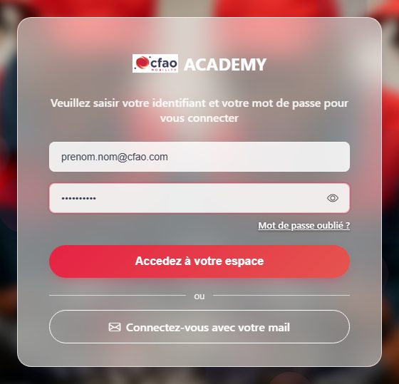
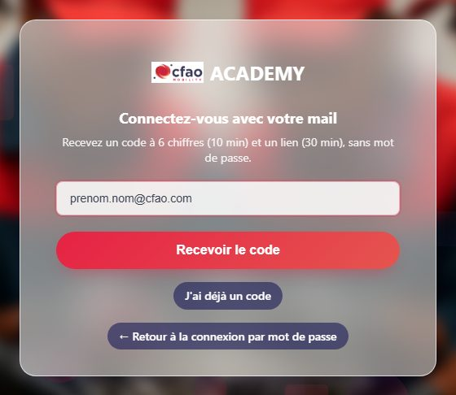
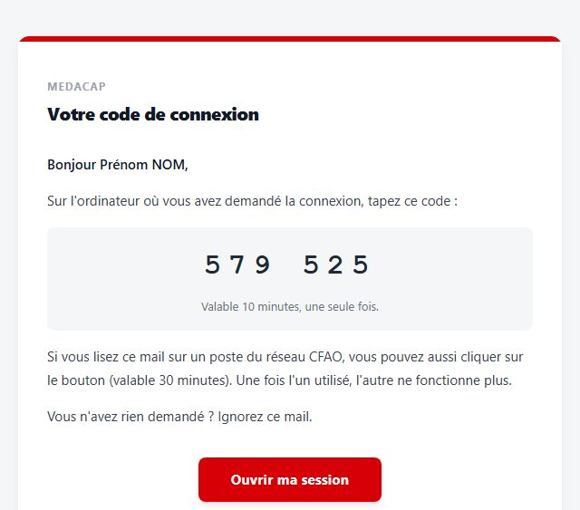
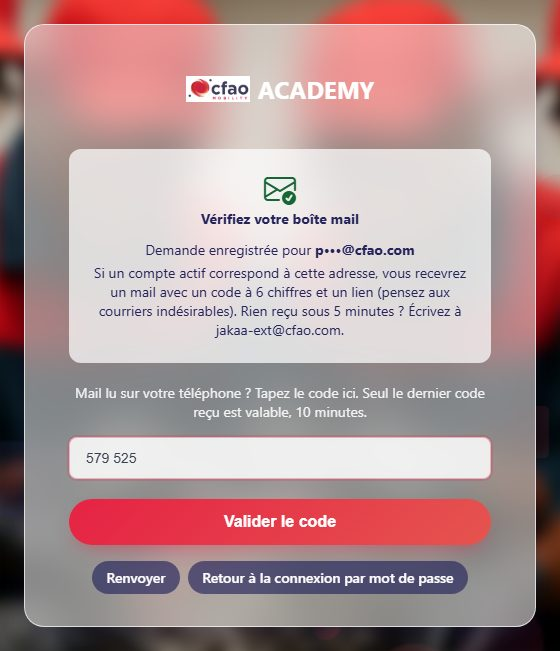

Se connecter à MEDACAP
Adresse : http://10.68.0.15:8010/ (depuis un poste du réseau CFAO)
1. Identifiant ou adresse mail + mot de passe
Saisissez votre identifiant ou votre adresse mail, puis votre mot de passe (il n'a pas changé), et cliquez sur « Accedez à votre espace ».

2. Sans mot de passe, avec un code reçu par mail
a. Cliquez sur « Connectez-vous avec votre mail », saisissez votre adresse @cfao.com puis « Recevoir le code ».

b. Vous recevez un mail « MEDACAP - Votre code de connexion » : un code à 6 chiffres (valable 10 minutes) et un bouton (30 minutes) utilisable depuis un poste du réseau CFAO.

c. Tapez ce code sur la page MEDACAP restée ouverte, puis « Valider le code ». Le code sert notamment si vous lisez le mail ailleurs que sur votre poste (téléphone) : le bouton du mail ne marche que sur le réseau CFAO, le code marche partout.

3. Mot de passe oublié
Cliquez sur « Mot de passe oublié ? » sous le formulaire et suivez les mêmes étapes a, b et c.
Un problème ? Écrivez à jakaa-ext@cfao.com.